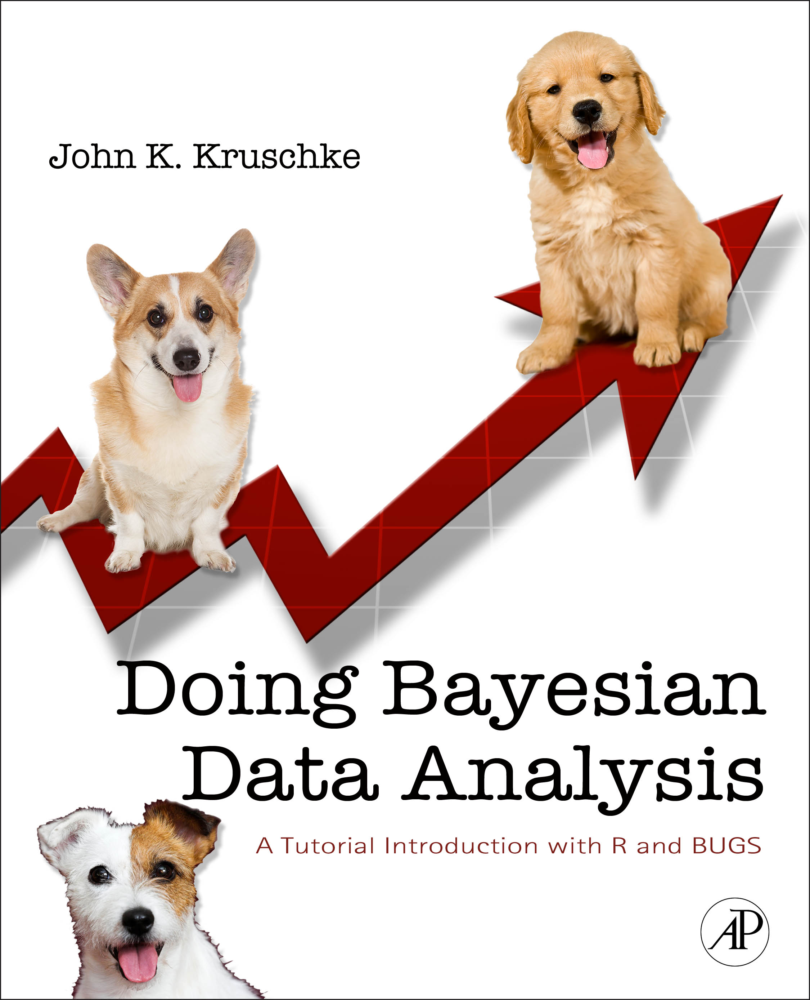

Doing Bayesian Data Analysis at
|
|
Introductory talk: Many fields of science are transitioning from null hypothesis significance testing (NHST) to Bayesian data analysis. There are many foundational problems with NHST. A few of these problems will be illustrated in the context of familiar t tests and multiple comparisons. Essentially, p values and the limits of confidence intervals depend strongly on the intentions of analyst, despite the fact that those intentions have no impact on the data. Moreover, confidence intervals carry no distributional information and are only minimally useful for predicting new data. On the other hand, Bayesian data analysis does not suffer these problems. Bayesian analysis provides complete information about the relative credibilities of all candidate parameter values. Bayesian analysis applies seamlessly to small samples, large samples, unbalanced designs, missing data, outliers, etc. Bayesian analysis software is flexible and can be used for a wide variety of data-analytic models. And it's free.
Friday Workshop. RSVP to Kelly.Goedert@shu.edu
This workshop shows you how to do Bayesian data analysis,
hands on (with free software called R and JAGS).
The intended audience is grad students, faculty, and other researchers who want
a ground-floor introduction to Bayesian data analysis. No mathematical
expertise is presumed.
You do not need to bring a notebook computer to the workshop. But you are invited to bring one, so that you can run the programs and see how their output corresponds with the presentation material. If you want to bring a notebook computer to the workshop, you must install the software before arriving at the workshop, because there will not be time to do it during the presentation. For complete instructions, please refer to this blog entry.
The Saturday workshop, for SHU faculty only, will include a specially prepared analysis of data collected by researchers at Seton Hall University.
Workshop Agenda:
 Who is the instructor? John Kruschke is five-time winner of Teaching Excellence Recognition Awards from Indiana University, where he is Professor of Psychological and Brain Sciences, and Adjunct Professor of Statistics. He has written an introductory textbook on Bayesian data analysis; see also the articles linked above. His research interests include the science of moral judgment, applications of Bayesian methods to teaching and learning, and models of attention in learning, which he has developed in both connectionist and Bayesian formalisms. He received the Troland Research Award from the National Academy of Sciences. He is action editor for the Journal of Mathematical Psychology, and is on the editorial boards of Psychological Review, the Journal of Experimental Psychology: General, among others.
Why go Bayesian? See Figure 1. But beyond that, sciences from astronomy to zoology are changing from 20th-century null-hypothesis significance testing to Bayesian data analysis, because Bayesian analysis provides complete information with flexible application to numerous models. Read more: *Your click on this link constitutes your request to the author for a personal copy of the article exclusively for individual research.
- An open letter explaining why it's time to go Bayesian.
- An article* that explains a critical flaw of p-values in null hypothesis significance testing, and two different Bayesian approaches to assessing null values.
Kruschke, J. K. (2010). Bayesian data analysis. Wiley Interdisciplinary Reviews: Cognitive Science, 1(5), 658-676. (doi:10.1002/wcs.72)
- An article* that emphasizes advantages of Bayesian data analysis and the fact that Bayesian data analysis is appropriate regardless of the status of Bayesian models of cognition.
Kruschke, J. K. (2010). What to believe: Bayesian methods for data analysis. Trends in Cognitive Sciences, 14(7), 293-300. (doi:10.1016/j.tics.2010.05.001)
- An article* that explains two Bayesian methods to assess null values, and which one is typically more informative.
Kruschke, J. K. (2011). Bayesian assessment of null values via parameter estimation and model comparison. Perspectives on Psychological Science, 6(3), 299-312.
Recommended textbook: Doing Bayesian Data Analysis: A Tutorial with R and BUGS. The book is a genuinely accessible, tutorial introduction to doing Bayesian data analysis. See some published reviews of the book here. Other endorsements and information about the book can be read here.
Bayesian data analysis is not Bayesian modeling of cognition. Data analysis involves "generic" descriptive models (such as linear regression) without any necessary interpretation as cognitive computation. The rational way to estimate parameters in descriptive models is Bayesian, regardless of whether or not Bayesian models of mind are viable. The concepts and methods of Bayesian data analysis transfer to other Bayesian models, including Bayesian models of cognition. Read more at this blog entry.
This page URL: http://www.indiana.edu/~jkkteach/WorkshopSHU2012.html